Deepseek本地部署知识库
介绍
AI知识库的实现主要依赖2种技术：语言大模型+知识向量化
简单概述，利用已有的文档、内部知识生成向量知识库，在提问的时候结合库的内容一起给大模型，让其做回答。
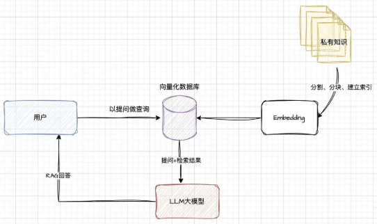安装ollama
下载
安装
1 | ollama |
安装Deepseek
1 | ollama run deepseek-r1:14b |
使用
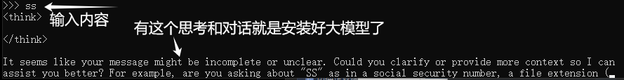
RAG工具Anything
下载工具
下面我们访问Anything LLM的官网下载Windows客户端：下载后，双击应用程序进行安装：
选择模型
安装完毕后打开软件后，点击get started按钮进入使用界面：
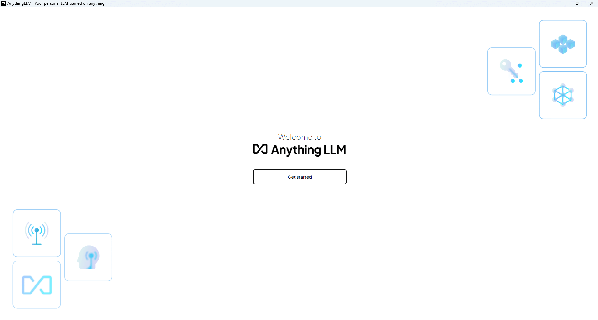配置与使用
第一步选择Ollama：
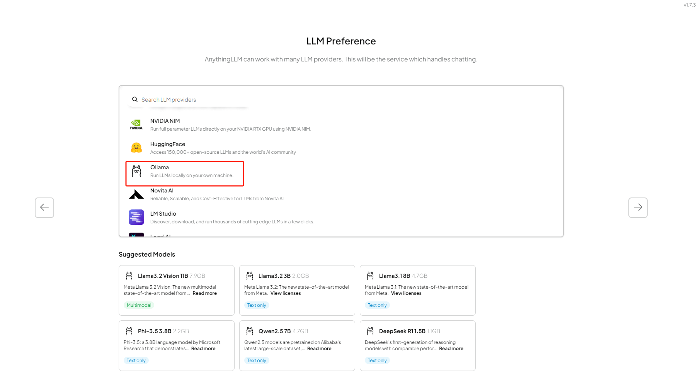选择好之后，点击右侧的箭头，下方会出现选择使用哪个大模型的下拉框，我们可以在这里看到之前本地部署的deepseek-r1:1.5b模型，如果你本地还有其他模型，也会出现在这里。
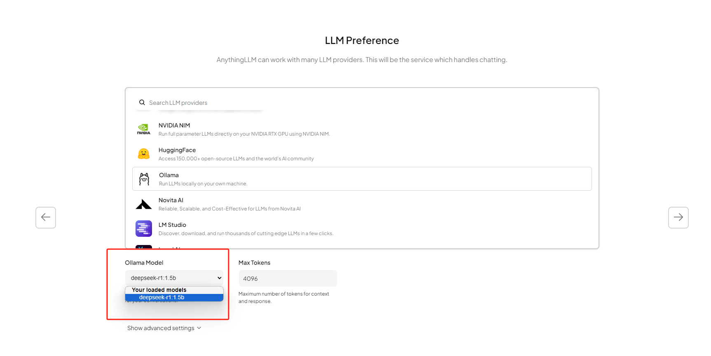下一步确认信息后，点击右侧箭头继续：
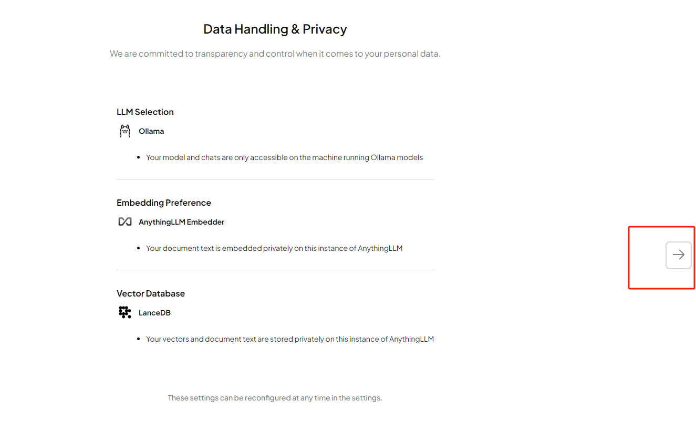现在我们需要创建一个工作区，并给它取个名字，输入后继续点击右侧箭头：
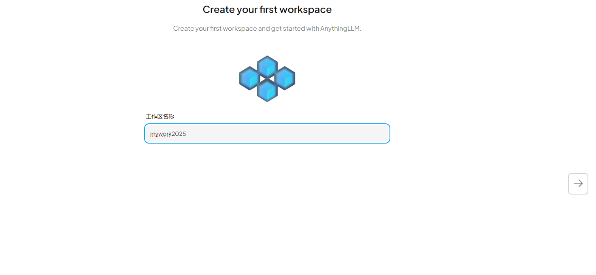在Anything LLM中配置好了大模型，并创建了一个工作区后就可以看到欢迎界面了：
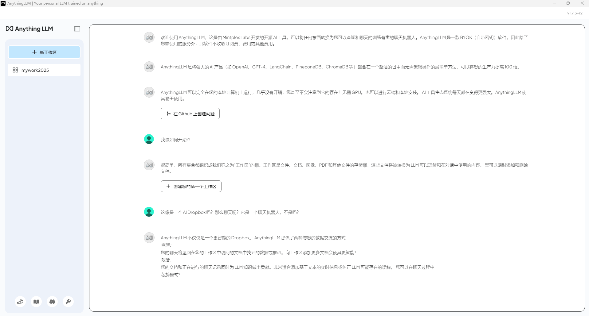点击左下角的扳手（设置），我们可以对界面语言进行修改：
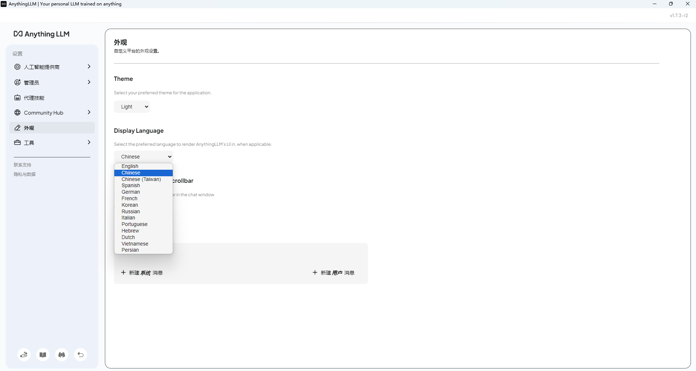设置好之后，点击同一位置的返回按钮，即可回到工作区，在下方的输入框中，就可以和大模型聊天了！
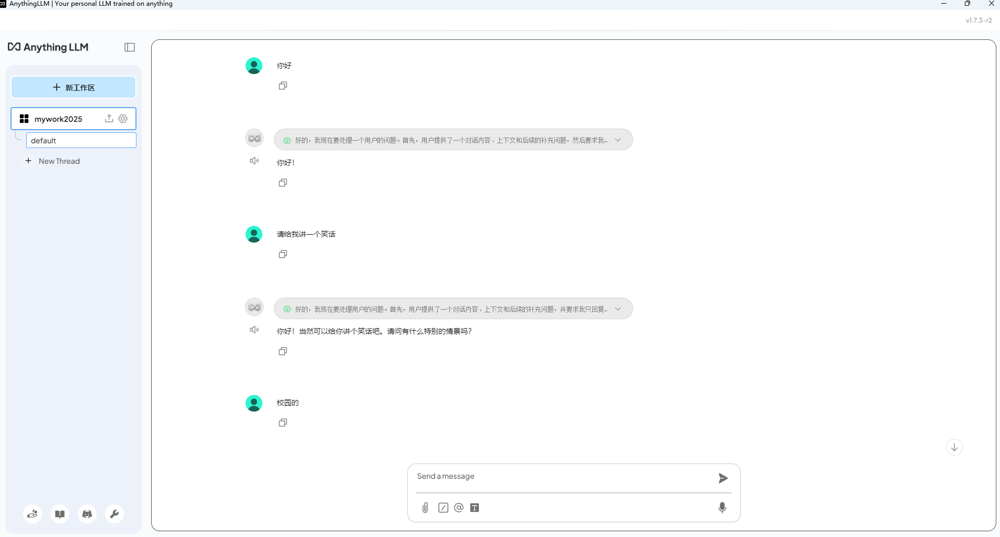如果我们需要上传文件或是图片等资料，点击工作区名称标签后的上传按钮即可打开上传界面：
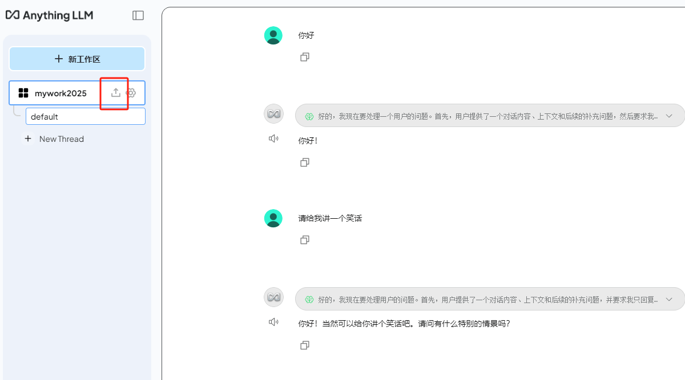 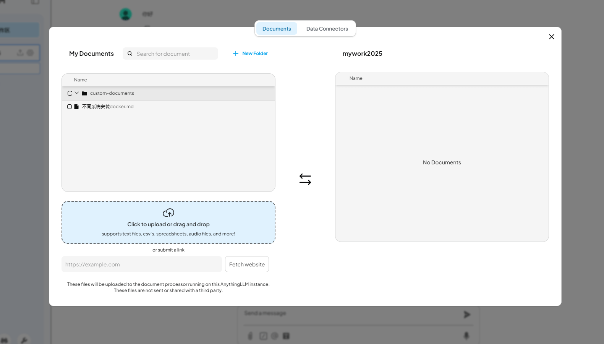除了支持多种文档类型（PDF、TXT、DOCX等），在上传按钮下方还可以直接粘贴网址，真的是非常方便又全面。勾选你要上传的文件，
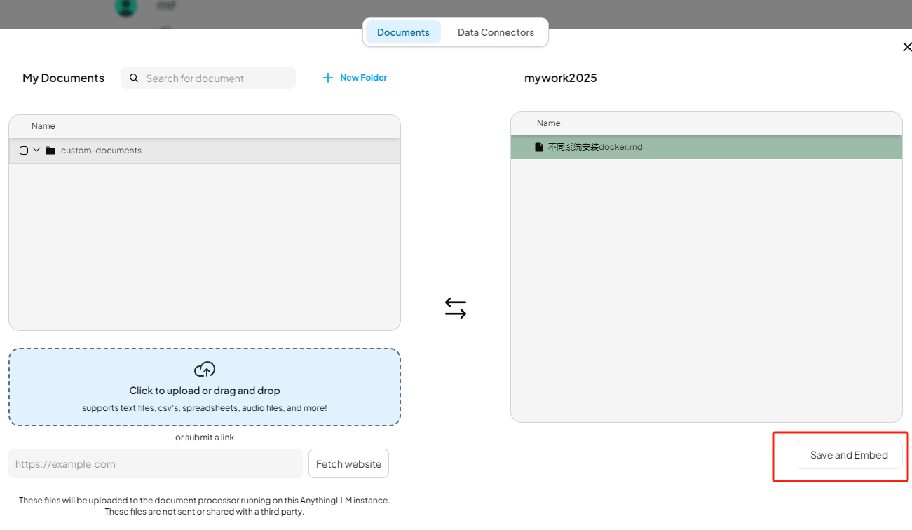点击右下角的保存和嵌入按钮即可上传你的资料。通过Anything LLM管理超大文档时高效、低耗。只需要一次就可以嵌入（Embedding)一个庞大的文档或文字记录，比其他文档聊天机器人解决方案节省超多成本。
异地调用
在设置界面的LLM首选项中，我们能看到刚才选择的LLM提供商是ollama，下方是模型信息，最底部有ollama运行的地址和端口：
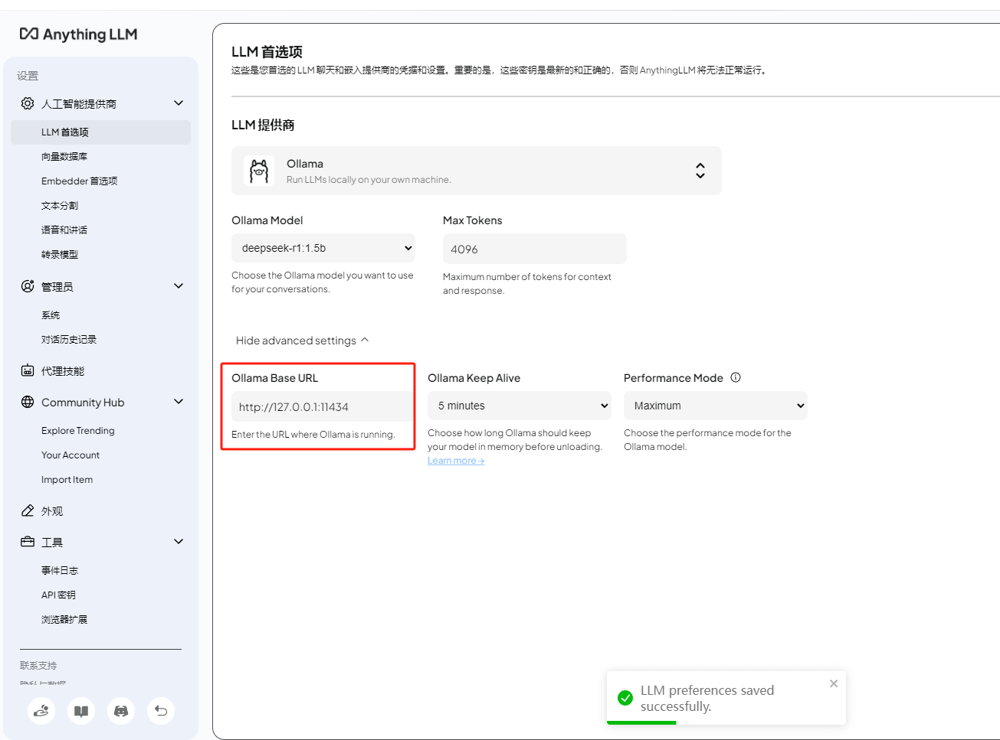如果我们想要在局域网内让其他的小伙伴也能远程使用Anything LLM调用ollama使用大模型进行聊天，那么我们需要进行对ollama进行一下环境变量设置！
打开cmd终端，执行下面两个命令：
1 | setx OLLAMA_HOST "0.0.0.0" |
Cmd
Copy
然后点击电脑桌面右下角的ollama图标退出并重启服务：

重新开启ollama服务后，同一局域网下的小伙伴在Anything LLM中将ollama的地址改为你的电脑IP加上端口号11434后，就能使用你在本地部署的大模型进行聊天或者上传文件训练了。

安装内网穿透
不过我们目前只能在本地局域网内多人使用Anything LLM远程访问大模型，如果想让异地好友、让更多人也能使用你在部署的deepseek大模型应该怎么办呢？很简单，只要安装一个cpolar内网穿透工具就能轻松实现远程访问内网主机中部署的服务了，接下来介绍一下如何安装cpolar内网穿透。